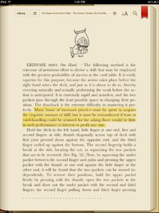

Hours of Incessant Practice

Many hours of incessant practice must be spent to acquire the requisite amount of skill; but it must be remembered if feats at card-handling could be attained for the asking there would be little in such performance to interest or profit anyone.Don't think this only applies to cards.